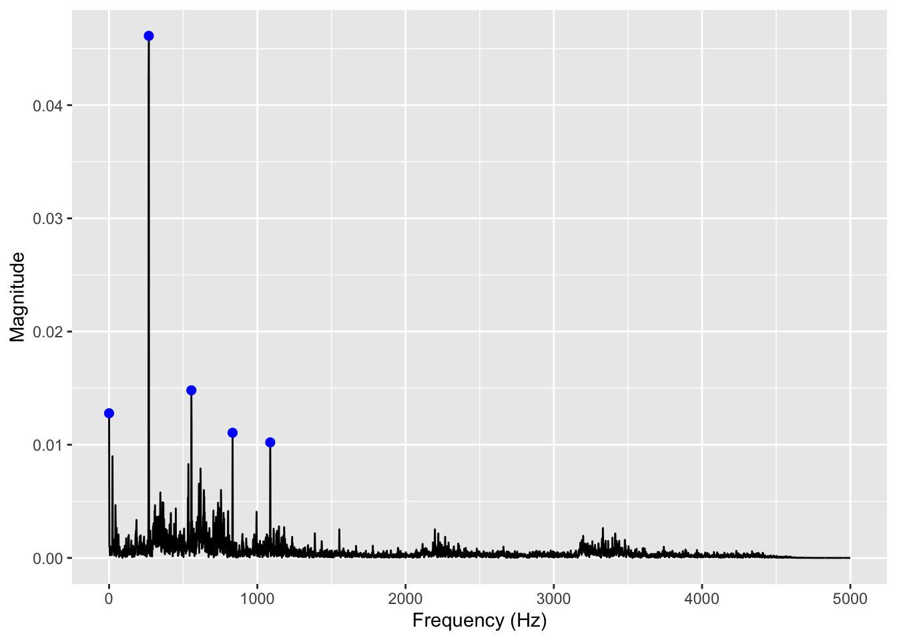
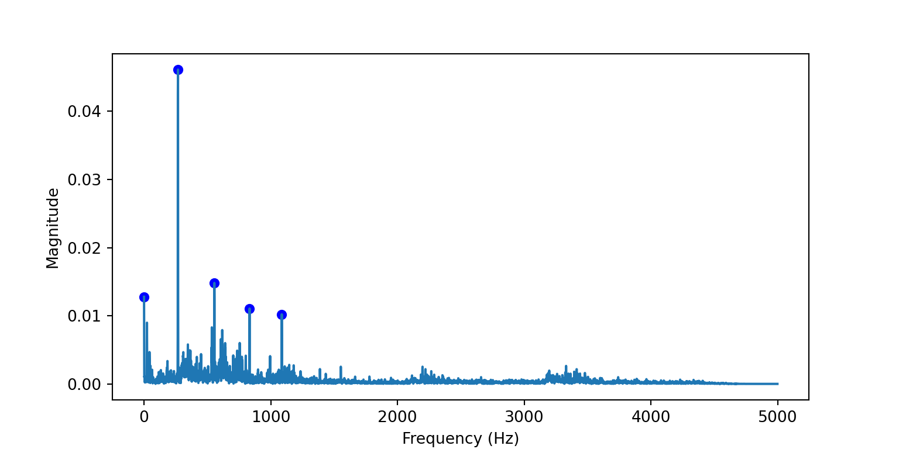
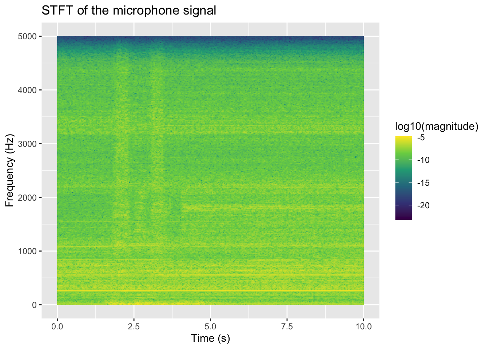
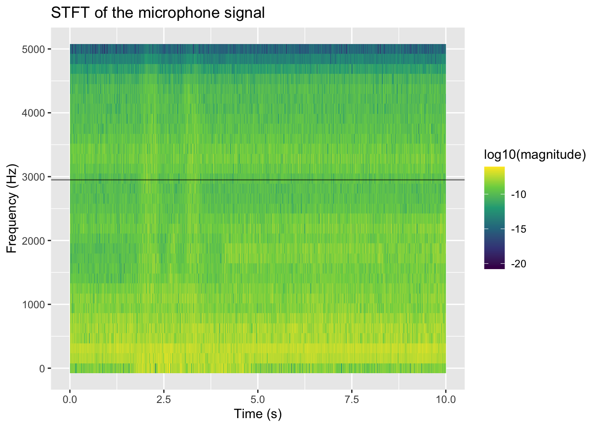
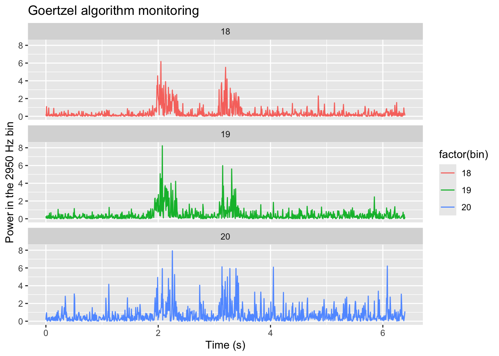

library(mongolite)
library(MASS)
library(patchwork)
library(ggfortify)
library(gsignal)
library(tidyverse)
library(RcppRoll)Multi-agent system for smart machining, part II
Chapter I-e: exercises
1 Exercise 1: FFT
1.1 Example in R
Let’s start with the plain FFT. We want to compute the FFT of the microphone time series for the first 10000 samples, and plot the amplitude spectrum. We can do this in R using the fft() function, which computes the discrete Fourier transform of a sequence. The amplitude spectrum can be obtained by taking the modulus of the FFT coefficients.
N <- 10000 # number of samples
fs = 10000 # sampling frequency in Hz
m <- mongo(
collection = "all_data", db = "MASSM_1",
url = "mongodb://localhost:27017")
df <- m$find(limit=10000) We also define a utility finction for defining the frequency axis of the FFT, which depends on the sampling frequency and the length of the time series, where we only take une half of the spectrum, since the FFT is symmetric for real-valued signals.
quick_fft <- function(signal, fs) {
N <- length(signal)
X <- fft(signal)
k <- 0:(N - 1)
freq <- k * fs / N
half_idx <- 1:(N / 2)
tibble(
frequency = freq[half_idx],
magnitude = Mod(X)[half_idx] / N
)
}Now we calculate the FFT (after applying the Hann window) and we use a trick for selecting the first 5 peaks:
- we calculate the rolling maximum of the magnitude with a window of 3 samples, which gives us a new variable
mag_3that has the same value asmagnitudefor the local maxima, and a smaller value for the other samples; - we sort the spectrum by magnitude in descending order, so that the peaks are at the top of the list;
- we select only the distinct values of
mag_3, which gives us only the local maxima, and we keep all the other variables for those samples; - we take the first 5 rows of the resulting data frame, which correspond to the 5 highest peaks in the spectrum.
signal <- df$microphone
spectrum <- quick_fft(signal * hann(length(signal)), fs)
peaks <- spectrum %>%
mutate(mag_3 = roll_max(magnitude, 3, fill = NA)) %>%
arrange(desc(magnitude)) %>%
distinct(mag_3, .keep_all = TRUE) %>%
head(5)
spectrum %>%
ggplot(aes(x = frequency, y = magnitude)) +
geom_line() +
geom_point(data = peaks, aes(x = frequency, y = magnitude), color = "blue", size = 2) +
labs(x = "Frequency (Hz)", y = "Magnitude")
Tip
The RcppRoll package has a lot of very efficient functions for rolling calculations, such as roll_max(), roll_mean(), roll_sd(), etc. These functions are implemented in C++ and are much faster than the equivalent functions in R, especially for large data frames. You can use them to compute rolling statistics on your time series data, which can be useful for peak detection, smoothing, or feature extraction.
The above algorithm for peak detection is a simple and effective way to find the local maxima in the spectrum, and can be configured by setting the window size in the roll_max() function, so that wider windows lump together nearby peaks, while narrower windows can separate closely spaced peaks.
The first 5 frequencies in the spectrume are:
peaks %>%
select(-mag_3) %>%
arrange(frequency) %>%
knitr::kable()| frequency | magnitude |
|---|---|
| 0 | 0.0127806 |
| 268 | 0.0461226 |
| 555 | 0.0148072 |
| 833 | 0.0110558 |
| 1087 | 0.0102061 |
Note that the first peak at frequency 0 Hz corresponds to the DC component of the signal, which is the average value of the microphone measurements. The other peaks correspond to the frequencies of the periodic components in the signal, which can be related to the physical phenomena that generated the sound.
2 Example in Python
The same workflow can be reproduced in Python with pymongo, numpy, pandas, and matplotlib.
from pymongo import MongoClient
import numpy as np
import pandas as pd
N = 10000
fs = 10000
client = MongoClient("mongodb://localhost:27017")
db = client["MASSM_1"]
collection = db["all_data"]
df_py = pd.DataFrame(list(collection.find({}, {"_id": 0}).limit(N)))
df_py.head() timestamp Ax Ay ... sd_Fy sd_Fz sd_Mz
0 2011-01-01 01:06:34.780 -0.87035 0.35072 ... NaN NaN NaN
1 2011-01-01 01:06:34.780 -0.88484 0.41803 ... NaN NaN NaN
2 2011-01-01 01:06:34.780 -0.43445 0.21252 ... NaN NaN NaN
3 2011-01-01 01:06:34.780 -1.32219 -0.02985 ... NaN NaN NaN
4 2011-01-01 01:06:34.780 -0.68264 -0.07039 ... NaN NaN NaN
[5 rows x 14 columns]We also define a small utility function to compute the FFT and build the corresponding frequency axis, again keeping only the first half of the spectrum.
def quick_fft(signal, fs):
n = len(signal)
X = np.fft.fft(signal)
freq = np.arange(n) * fs / n
half_idx = slice(0, n // 2)
return pd.DataFrame(
{
"frequency": freq[half_idx],
"magnitude": np.abs(X)[half_idx] / n,
}
)Now we apply the Hann window, compute the FFT, and use the same rolling-maximum trick to identify the 5 strongest local peaks in the spectrum.
import matplotlib.pyplot as plt
signal = df_py["microphone"].to_numpy()
window = np.hanning(len(signal))
spectrum = quick_fft(signal * window, fs)
spectrum["mag_3"] = spectrum["magnitude"].rolling(3, center=True).max()
peaks = (
spectrum.sort_values("magnitude", ascending=False)
.drop_duplicates(subset="mag_3")
.head(5)
)
fig, ax = plt.subplots(figsize=(8, 4))
ax.plot(spectrum["frequency"], spectrum["magnitude"])
ax.scatter(peaks["frequency"], peaks["magnitude"], color="blue", s=30)
ax.set_xlabel("Frequency (Hz)")
ax.set_ylabel("Magnitude")
plt.show()
The first 5 frequencies in the spectrum are:
peaks[["frequency", "magnitude"]].sort_values("frequency").reset_index(drop=True) frequency magnitude
0 0.0 0.012781
1 268.0 0.046123
2 555.0 0.014807
3 833.0 0.011056
4 1087.0 0.010206The interpretation is the same as in R: the peak at 0 Hz is the DC component, while the other peaks correspond to the dominant periodic components of the microphone signal.
3 Exercise 2: STFT
Now let’s perform a Short Time Fourier Transform (STFT) of the microphone signal, which allows us to analyze how the frequency content of the signal changes over time. We can do this by applying the FFT to overlapping windows of the signal, and then plotting the resulting spectrogram, or we just use the gsignal::stft() function, which does all the work for us.
Firstly, we fetch the first 10 000 samples from the database:
N <- 10000 # number of samples
fs = 10000 # sampling frequency in Hz
m <- mongo(
collection = "all_data", db = "MASSM_1",
url = "mongodb://localhost:27017")
df <- m$find(limit=100000) Then, we calculate the STFT with a sliding windows of 1024 samples with the defualt overlapping of 0.75:
ft <- stft(df$microphone, fs = fs, window = hann(1024))Finally, we plot the spectrogram, which is a heatmap of the magnitude of the STFT coefficients as a function of time and frequency. We use a logarithmic scale for the magnitude to better visualize the peaks in the spectrum.
expand.grid(freq=ft$f, time=ft$t) %>%
mutate(magnitude = as.vector(ft$s)) %>%
ggplot(aes(x = time, y = freq, fill = log10(magnitude))) +
geom_tile() +
labs(x = "Time (s)", y = "Frequency (Hz)", title="STFT of the microphone signal") +
scale_fill_viridis_c()
TodoTodo
Using the page() method of the mongo query, repeat the above analysis by building the STFT on the fly, fetching pages of 1024 samples and calculating the FFT for each page, and then combining the results into a single data frame for plotting. This approach allows you to analyze longer time series without having to load the entire dataset into memory at once.
4 Exercise 3: The Goertzel algorithm
The Goertzel algorithm is an efficient way to compute the DFT of a signal at a specific frequency, without having to compute the entire FFT. This can be useful when we are only interested in a few frequencies, such as the peaks identified in the previous exercise.
We use the Goertzel library on https://github.com/pbosetti/goertzel, which can be installed in R with:
pak::pak("pbosetti/goertzel")ℹ Loading metadata database✔ Loading metadata database ... done ℹ No downloads are needed✔ 1 pkg + 1 dep: kept 1 [5.5s]library(goertzel)Now, remember that the Goertzel algorithm calculates the signal power in a given frequency bin, which is defined as the range of frequencies that are mapped to the same DFT coefficient. The width of the frequency bin depends on the sampling frequency and the length of the signal, and can be calculated as fs / N, where fs is the sampling frequency and N is the length of the signal. Therefore, when we want to calculate the power at a specific frequency using the Goertzel algorithm, we need to specify the corresponding frequency bin, which can be calculated as round(frequency / (fs / N)).
For the algorithm to be more robust to small frequency variations, is thus evident that the resolution of the DFT shold be not too high, so that the controlled bin is wide enough to capture the energy of the signal even if the frequency is not exactly at the center of the bin. In other words, we need to reduce the frequency resolution, i.e. ,given the same sampling frequency, to reduce the length of the signal. Let’s look at the STFT with much shorter windows, for example 64 samples, which gives us a frequency resolution of fs / 64 = 156.25 Hz, which is wide enough to capture the energy of the peaks we identified in the previous exercise:
ft <- stft(df$microphone, fs = fs, window = hann(64), overlap=0.25)
expand.grid(freq=ft$f, time=ft$t) %>%
mutate(magnitude = as.vector(ft$s)) %>%
ggplot(aes(x = time, y = freq, fill = log10(magnitude))) +
geom_tile() +
geom_hline(yintercept = 2950, alpha = 0.5) +
labs(x = "Time (s)", y = "Frequency (Hz)", title="STFT of the microphone signal") +
scale_fill_viridis_c()
Tip
Try and change the width of the Hann window and see how the vertical resolution changes.
Now, suppose that we want to monitor the bin corresponding to the peak at 2950 Hz, which is the most interesting one for us. We can calculate the corresponding frequency bin as round(2950 / (fs / 64)) = 19, and then apply the Goertzel algorithm to the microphone signal to calculate the power in that bin over time. We can do this by applying the Goertzel algorithm to each window of the signal, and then plotting the resulting time series of the power in that bin. To enhance the analysis, we also decide to monitore the two adjacent bins:
it <- m$iterate()
monitored_freq_bin <- tibble()
for (i in 1:1000) {
page <- it$page(64)
if (nrow(page) == 0) break
tibble(
time = rep(page$timestamp[1], 3), # or you can use the average timestamp of the page
bin = 18:20, # we monitor the bins around the target frequency bin
g = goertzel(page$microphone, bin),
power = Mod(g)^2
) %>%
bind_rows(monitored_freq_bin) -> monitored_freq_bin
}
monitored_freq_bin <- monitored_freq_bin %>%
arrange(time) %>%
mutate(
time = time - time[1],
bin = factor(bin))Now we can plot the time evolution of the signal power in the monitored frequency bins, and see how it changes over time:
monitored_freq_bin %>%
ggplot(aes(x = time, y = power, color=factor(bin))) +
geom_line() +
labs(x = "Time (s)", y = "Power in the 2950 Hz bin", title="Goertzel algorithm monitoring") +
facet_wrap(~bin, ncol=1)Don't know how to automatically pick scale for object of type <difftime>.
Defaulting to continuous.
Note
The advantage of this approach is purely computational: when the signal processing is performed on the edge, with very limitet memory and computational resources, the Goertzel algorithm allows us to monitor specific frequencies without having to compute the entire FFT, which can be very expensive in terms of memory and computation time.
5 Exercise 4: Improve the MongoDB queries
Now if you play on MongoDB Conpass with the combined view, you migh observe that filtering the data by time range is very slow. This is because the view is not a real table, and as such it does not have indexes on the timestamp field. Indexes can be created freely on real collections, and are the main tool to make quesries faster, but they cannot be created on views, which are just virtual tables defined by a query. Therefore, when we filter the view by time range, MongoDB has to scan the entire view and apply the filter to each document, which is very inefficient.
Warning
Always define an index on all the fields that you plan to use for filtering.
Views that work on a single collection can reuse the indexes of that collection, but views that combine multiple collections cannot use any index, and are therefore very slow for filtering.
So we can rework our approach by first filtering the original tables according to a given timestamp range, and then applying the same transformations as in the view to the filtered data. This way we can take advantage of the indexes on the original collections, and make our queries much faster.
To do that, we cannot create a view in MongoDB Compass, but we can run the pipeline directly from the client, using the aggregate() method of the mongolite package.
The pipeline above defined with the helop of the Compass AI can be rearranged and optimized as follows:
[
{
$match: {
"message.timestamp": {
$gte: ISODate("2011-01-01T01:06:34.784+00:00"),
$lt: ISODate("2011-01-01T01:06:35.784+00:00")
}
}
},
{
$project: {
ts: "$message.timestamp",
Ax: "$message.measurements.Ax",
Ay: "$message.measurements.Ay",
Az: "$message.measurements.Az",
microphone: "$message.measurements.microphone"
}
},
{
$set: {
len: {
$max: [
{ $size: "$Ax" },
{ $size: "$Ay" },
{ $size: "$Az" },
{ $size: "$microphone" }
]
}
}
},
{
$project: {
ts: 1,
Ax: 1,
Ay: 1,
Az: 1,
microphone: 1,
idx: { $range: [0, "$len"] }
}
},
{ $unwind: "$idx" },
{
$lookup: {
from: "force",
let: { ts: "$ts" },
pipeline: [
{
$match: {
$expr: {
$lte: ["$message.timestamp", "$$ts"]
},
"message.timestamp": {
$gte: ISODate("2011-01-01T01:06:34.784+00:00"),
$lt: ISODate("2011-01-01T01:06:35.784+00:00")
}
}
},
{ $sort: { "message.timestamp": -1 } },
{ $limit: 1 }
],
as: "force_doc"
}
},
{
$set: {
force_doc: { $arrayElemAt: ["$force_doc", 0] }
}
},
{
$project: {
_id: 0,
timestamp: "$ts",
Fx: "$force_doc.message.measurements.Fx",
Fy: "$force_doc.message.measurements.Fy",
Fz: "$force_doc.message.measurements.Fz",
Mz: "$force_doc.message.measurements.Mz",
sd_Fx: "$force_doc.message.measurements.sd_Fx",
sd_Fy: "$force_doc.message.measurements.sd_Fy",
sd_Fz: "$force_doc.message.measurements.sd_Fz",
sd_Mz: "$force_doc.message.measurements.sd_Mz",
Ax: { $arrayElemAt: ["$Ax", "$idx"] },
Ay: { $arrayElemAt: ["$Ay", "$idx"] },
Az: { $arrayElemAt: ["$Az", "$idx"] },
microphone: { $arrayElemAt: ["$microphone", "$idx"] },
idx: "$idx"
}
}
]
Note
Note that we are doing a $match stage both at the beginning of the pipeline, to select a time slice in the acceleration collection, and inside the $lookup stage, to select the corresponding time slice in the force collection before merging the two collections using message.timestamp. This way we can take advantage of the indexes on the timestamp field in both collections, and make our queries much faster.
Copy and paste that pipeline in MongoDB Compass, run it and look at the result.
Now, saving that pipeline as a view is possible, but of little help, since the time boundaries are fixed in the pipeline, and cannot be changed when querying the view. Therefore, it is better to run that pipeline directly from the client, using the aggregate() method of the mongolite package, and passing the desired time boundaries as parameters to the pipeline. This way we can have a flexible and efficient way to query the data for any time range we are interested in.
Working in R, we first define a function that takes the time boundaries as input, and returns the result of the aggregation pipeline as a JSON string:
merge_pipeline <- function(start_time, end_time, pretty=TRUE) {
time_range <- list(
'$gte' = list("$date" = start_time),
'$lt' = list("$date" = end_time)
)
pipeline <- list(
list(
'$match' = list(
'message.timestamp' = time_range
)
),
list(
'$project' = list(
ts = '$message.timestamp',
Ax = '$message.measurements.Ax',
Ay = '$message.measurements.Ay',
Az = '$message.measurements.Az',
microphone = '$message.measurements.microphone'
)
),
list(
'$set' = list(
len = list(
'$max' = list(
list('$size' = '$Ax'),
list('$size' = '$Ay'),
list('$size' = '$Az'),
list('$size' = '$microphone')
)
)
)
),
list(
'$project' = list(
ts = 1,
Ax = 1,
Ay = 1,
Az = 1,
microphone = 1,
idx = list('$range' = list(0, '$len'))
)
),
list('$unwind' = '$idx'),
list(
'$lookup' = list(
from = 'force',
let = list(ts = '$ts'),
pipeline = list(
list(
'$match' = list(
'$expr' = list('$lte' = c('$message.timestamp', '$$ts')),
'message.timestamp' = time_range
)
),
list('$sort' = list('message.timestamp'=-1)),
list('$limit'=1)
),
as='force_doc'
)
),
list(
'$set'=list(force_doc=list('$arrayElemAt'=list('$force_doc', 0)))
),
list(
'$project'=list(
'_id'=0,
timestamp='$ts',
Fx='$force_doc.message.measurements.Fx',
Fy='$force_doc.message.measurements.Fy',
Fz='$force_doc.message.measurements.Fz',
Mz='$force_doc.message.measurements.Mz',
sd_Fx='$force_doc.message.measurements.sd_Fx',
sd_Fy='$force_doc.message.measurements.sd_Fy',
sd_Fz='$force_doc.message.measurements.sd_Fz',
sd_Mz='$force_doc.message.measurements.sd_Mz',
Ax=list('$arrayElemAt'=list('$Ax', '$idx')),
Ay=list('$arrayElemAt'=list('$Ay', '$idx')),
Az=list('$arrayElemAt'=list('$Az', '$idx')),
microphone=list('$arrayElemAt'=list('$microphone', '$idx')),
idx='$idx'
)
)
)
return(jsonlite::toJSON(pipeline, auto_unbox = TRUE, pretty=pretty))
}
# Try and run:
# merge_pipeline("2011-01-01T01:06:34.784Z", "2011-01-01T01:06:35.784Z") Now we can run that pipeline directly from the client, passing the desired time boundaries as parameters to the pipeline. We create a connection to the acceleration collection, and then we call the aggregate() method with the pipeline generated by the merge_pipeline() function, and we convert the result to a tibble for further analysis.
# Now we can run that pipeline directly from the client, passing the desired time boundaries as parameters to the pipeline.
start_time <- "2011-01-01T01:06:37.0Z"
end_time <- "2011-01-01T01:06:38.0Z"
m <- mongo(
collection = "acceleration", db = "MASSM_1",
url = "mongodb://localhost:27017")
# system.time measures the execution time of a code block
exec.time <- system.time({
df <- merge_pipeline(start_time, end_time) %>%
m$aggregate() %>%
as_tibble()
})
df %>%
na.omit() %>%
slice_head(n=10) %>%
knitr::kable()| timestamp | Ax | Ay | Az | microphone | idx | Fx | Fy | Fz | Mz | sd_Fx | sd_Fy | sd_Fz | sd_Mz |
|---|---|---|---|---|---|---|---|---|---|---|---|---|---|
| 2011-01-01 02:06:37 | 1.65766 | 0.07358 | 1.13922 | 0.62527 | 0 | -0.0038574 | -0.0608718 | -0.1912699 | 0.0035848 | 0.3972336 | 0.7275536 | 0.3775459 | 0.0114774 |
| 2011-01-01 02:06:37 | -1.63351 | -0.66040 | -0.01740 | 0.89588 | 1 | -0.0038574 | -0.0608718 | -0.1912699 | 0.0035848 | 0.3972336 | 0.7275536 | 0.3775459 | 0.0114774 |
| 2011-01-01 02:06:37 | -1.59247 | -1.14576 | -1.27633 | 0.73908 | 2 | -0.0038574 | -0.0608718 | -0.1912699 | 0.0035848 | 0.3972336 | 0.7275536 | 0.3775459 | 0.0114774 |
| 2011-01-01 02:06:37 | 2.22538 | -0.59640 | -0.84463 | 0.43243 | 3 | -0.0038574 | -0.0608718 | -0.1912699 | 0.0035848 | 0.3972336 | 0.7275536 | 0.3775459 | 0.0114774 |
| 2011-01-01 02:06:37 | -3.89462 | -1.21184 | -1.62275 | 0.35504 | 4 | -0.0038574 | -0.0608718 | -0.1912699 | 0.0035848 | 0.3972336 | 0.7275536 | 0.3775459 | 0.0114774 |
| 2011-01-01 02:06:37 | 2.36589 | 0.11731 | 1.66335 | 0.10662 | 5 | -0.0038574 | -0.0608718 | -0.1912699 | 0.0035848 | 0.3972336 | 0.7275536 | 0.3775459 | 0.0114774 |
| 2011-01-01 02:06:37 | 0.29732 | -0.25121 | -0.91621 | -0.01476 | 6 | -0.0038574 | -0.0608718 | -0.1912699 | 0.0035848 | 0.3972336 | 0.7275536 | 0.3775459 | 0.0114774 |
| 2011-01-01 02:06:37 | -3.24011 | -0.37762 | -0.99779 | -0.09670 | 7 | -0.0038574 | -0.0608718 | -0.1912699 | 0.0035848 | 0.3972336 | 0.7275536 | 0.3775459 | 0.0114774 |
| 2011-01-01 02:06:37 | 3.33909 | 0.63682 | -0.47612 | -0.48036 | 8 | -0.0038574 | -0.0608718 | -0.1912699 | 0.0035848 | 0.3972336 | 0.7275536 | 0.3775459 | 0.0114774 |
| 2011-01-01 02:06:37 | -2.94858 | 0.26939 | -1.48514 | -0.46298 | 9 | -0.0038574 | -0.0608718 | -0.1912699 | 0.0035848 | 0.3972336 | 0.7275536 | 0.3775459 | 0.0114774 |
And the query took (in seconds):
exec.time user system elapsed
0.041 0.002 0.664 Try and apply the same timestamp query to a combined view. The execution time would probably timeout. But the above querying before aggregation is 🔥 waaaay faster! ⚡️
Note
The pipeline that we are using to merge the acceleration and force merges the slower force collection into the faster acceleration collection. Missing values in force are filled by carrying forward the last known value, which is a common technique for handling missing data in time series. The sole problem with this approach is that when the initial time of the query is arbitrary, the first value of the force variables will be missing, since there is no previous value to carry forward. For this reason we will use na.omit(): to exclude the first part of the time series where the force variables are missing, and only keep the part where all the variables have valid values.
TodoTodo
Improve the merge_pipeline() function to accept defaults so that:
- if the start time is not given, it is assumed to be “since the beginning”
- if the end time is not given, it is assumed to be “until the end”
- at least one of the two time boundaries must be given, otherwise the function should throw an error.
Now we want to extract a 1 s period from the beginning of the time series and calculate the reference average values for all the variables, which we can use as a baseline for further analysis. We can do this by filtering the data frame for the first 1 s of data, and then calculating the mean of each variable, excluding the timestamp and idx variables:
reference <- df %>%
na.omit() %>%
select(-timestamp, -idx) %>%
summarise(across(everything(), mean)) %>%
unlist()
reference Ax Ay Az microphone Fx
-0.6142429498 0.0073205251 -0.5997727500 -0.0224257319 -0.0258568192
Fy Fz Mz sd_Fx sd_Fy
-0.0169717721 0.3433675649 0.0004681969 0.5946844428 0.6298720919
sd_Fz sd_Mz
0.2511601236 0.0079699841 This reference can be used within a Hotelling’s T-squared control chart to monitor the process and detect any deviations from the normal operating conditions, which can be indicative of tool wear or other issues in the machining process.
Let’s for example extract a second frame, later on, and then apply the Hotelling’s T-squared test to compare the two frames and see if there is a significant difference between them:
start_time <- "2011-01-01T01:09:37.0Z"
end_time <- "2011-01-01T01:09:38.0Z"
df <- merge_pipeline(start_time, end_time) %>%
m$aggregate() %>%
as_tibble()
df %>% na.omit() %>%
select(-timestamp, -idx) %>%
DescTools::HotellingsT2Test(
mu = reference
)
Hotelling's one sample T2-test
data: .
T.2 = 9693423, df1 = 12, df2 = 9948, p-value < 2.2e-16
alternative hypothesis: true location is not equal to c(-0.614242949799197,0.00732052510040165,-0.59977275,-0.0224257319277108,-0.0258568191863453,-0.0169717720905623,0.343367564861044,0.000468196882931726,0.594684442798105,0.629872091935496,0.251160123645024,0.00796998413328374)
TodoTodo
Improve the above analysis by looping over the time series in 1 s frames, and applying the Hotelling’s T-squared test to each frame, comparing it with the reference frame. This way we can monitor the process over time and detect any deviations from the normal operating conditions as they happen.